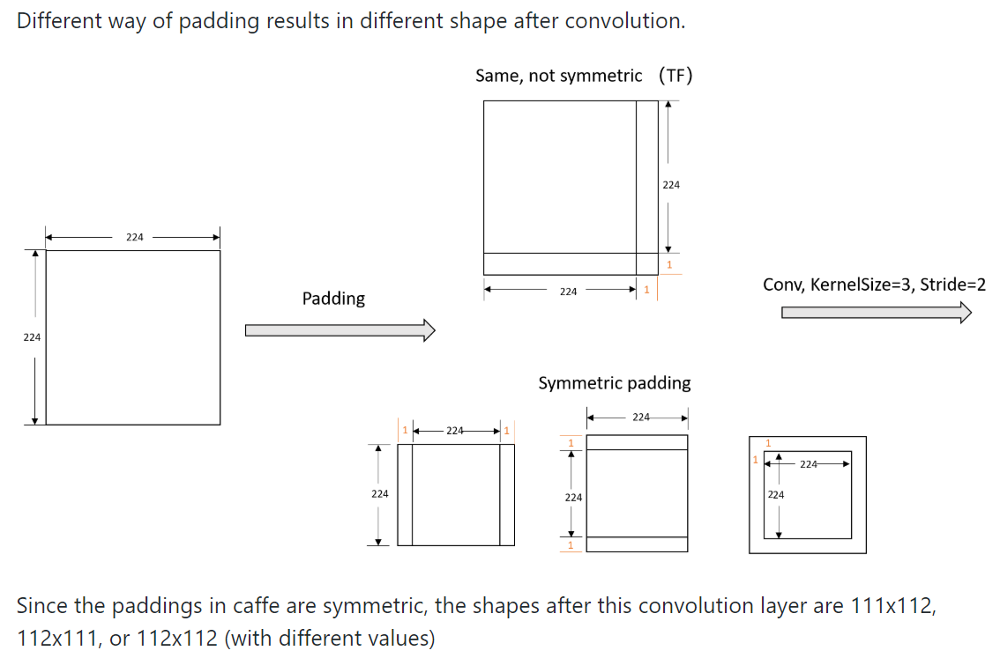
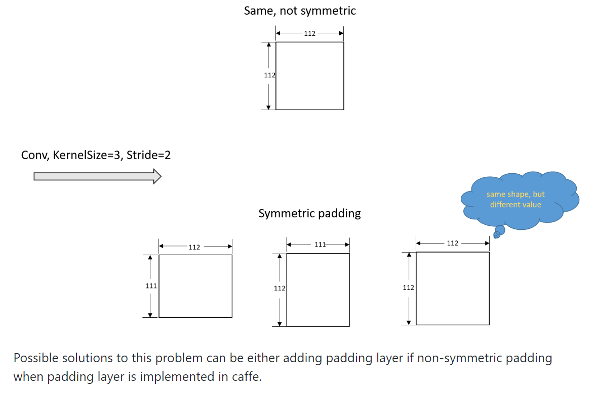

本文主要以 cosine metric learning 工程为例，记录了如何将一个 Tensorflow 模型 (包含 ckpt 文件) 移植到 Caffe 框架下。
流程
- 根据 Tensorflow 的网络定义源码，手动编写 Caffe 的网络定义文件 *.prototxt.
- 将训练好的 ckpt 文件中的参数 dump 到磁盘，存为 npy 文件。
- 使用 pycaffe API, 加载 prototxt 文件，生成 Net 对象。
- 根据 npy 文件与 Net 对象中网络层的对应关系，将 npy 文件中的值赋给 Net 对象中的参数。
- 将 Net 对象保存为 caffemodel 文件到磁盘。
一些应该注意的点
1. Tensorflow 中的 BN 层对应 Caffe 中的两个层，BatchNorm + Scale. 这是因为 Batch Normalization 算法最后有一个 缩放+偏置 的操作，这就对应 Caffe 中的 Scale 层。通常 Scale 层的缩放参数记为 $\gamma$, 偏置参数记为 $\beta$. 有时候，从 ckpt 模型中 dump 出的 npy 文件没有 BN 层对应的 gamma 值，这可能是因为其在训练时没有使用缩放（batch_norm 函数的 scale 参数设为了 None ），也就是 $\gamma=1$。因此在流程第 4 步时，将相应 shape 的值全为 1 的 ndarray 赋给 Net 对象中 Scale 层对应的 gamma 即可，即
net.params[conv1_scale][0].data[...] = np.ones(bn_beta). 此外，若 npy 文件中有 BN 层对应的 beta 值，则在 prototxt 文件中对应的 Scale 层应设置bias_term: true，因为这里的 beta 值就是 bias term. 参考1 参考2
2. ckpt 中 dump 出的 npy 文件中可能没有某些 Convolution 层的 bias 权重。因此，在 prototxt 文件中，为此 Convolution 层设置
bias_term: false.
3. 在从 ckpt 中 dump 出来的参数里，有些可能名如
*/Adam,*/Adam_1，这个是因为模型使用了 Adam 优化器，这两个是对某个参数更新的时候使用的，如果只是在测试阶段进行前向推导，则不需要这两个参数。参考
但是如果是需要对模型进行 Finetune, 出现大量 Adam 变量丢失的错误，则有可能是 要恢复的变量的位置 和 Adam 优化器的位置 出错造成的。【tensorflow】加载pretrained model出现的大量adam变量丢失
4. 一些 Tensorflow 的项目使用
tf.image.decode_jpeg()函数来读取 jpg 图像，要注意的是，如果直接使用此函数的默认dct_method的话，此函数读取到的值将会跟cv2.imread()读取的值不一致。这是因为tf.image.decode_jpeg()函数默认会为了解码速度而牺牲一些解码精度。如果想要获得跟cv2.imread()相同的结果的话，设置参数dct_method='INTEGER_ACCURATE'。参考1 参考2
此外，tf.image.decode_jpeg()函数返回的图像是RGB通道的，cv2.imread()是BGR通道。
5. Tensorflow 和 Caffe 在某些操作上的区别
5-1. Feature map 以及 卷积核 维度顺序的区别
在 Tensorflow 中，feature map 的默认索引顺序是NHWC, 卷积核是HWIO，而 Caffe 中两者的索引顺序是NCHW和OIHW.
需要说明的是，如果输入是完全一样的图片，在将图像以及卷积核按各自索引顺序 transpose 好后，后续生成的 feature map 在理论上来说应是完全一样的，它们只是索引的顺序不一样而已(feature map 内部各元素之间的相对顺序是一致的)。
5-2. Flatten 操作的区别
据上文所述，同样的输入以及卷积核在不同框架中计算得到的 feature map 是一致的。但是如果要对 feature map (4D) 进行 flatten 操作的话，则此结论可能不成立。因为 flatten 是将 3D 的 feature map 拉伸成 1D, 那么不同的顺序可能就会产生不同的 1D 向量 (内部元素的相对位置可能发生了改变).
对同一个 feature map, 若其 shape 为NHWC（这里的 NHWC 与上文所说的 NHWC 意义不一样，针对某个特定的 feature map, 其 NHWC 的值是固定的）, Tensorflow 的顺序是沿着C -> W -> H，而 Caffe 的顺序是沿着W -> H -> C。两者 flatten 的顺序在其各自的输入 feature map 索引顺序中都是3 -> 2 -> 1
例如，一个1x3x3x2的 feature map.
2
3
4
5
6
7
8
9
10
[4,5,6], |
[7,8,9]], |
W -------------
[[10,11,12],
[13,14,15],
[16,17,18]]]
Tensorflow: [1, 10, 2, 11, 3, 12, 4, 13, ... ]
Caffe: [1, 2, 3, 4, 5, 6, 7, 8, 9, 10, 11, ...]由于 两者 flatten 的顺序在其各自的输入 feature map 索引顺序中都是
3 -> 2 -> 1，因此若这两个 flatten 的输入是一样的话，则它们的输出也是一样的。由于 Caffe 中没有类似 Transpose 这样的层，因此我采取使用 pycaffe 将前向 inference 后 Flatten 层的输入取出，用 numpy 进行 transpose 后，再重新赋给 Flatten 层当输入，然后再次调用 pycaffe 的接口net.forward(start='', end='')指定从某个层开始前向传播，这里就指定 start 参数为 Flatten 层的 name. 这样，即可在 Caffe 中得到与 Tensorflow 中同样的 Flatten 层输出。net.forward 指定起点
Caffe 的 Flatten 层有axis,end_axis两个参数，但是我无论如何设置都无法在不对输入进行 transpose 的情况下得到与 Tensorflow 一样的结果。也许是我没理解对这两个参数的意义。参考1 参考25-3. Padding 操作的区别
Caffe 中的所有 padding 操作都是对称的，也就是说如果设置pad_w=1则会在 feature map 的左右两边都 pad 一个像素。但是 Tensorflow 不是如此，有可能出现左边 pad 1, 右边 pad 2，或者上边 pad 1,下边 pad 2 的情况。因此，在移植时，要保持在 Tensorflow 和 Caffe 中的 padding 方式都一样，这样才能得到相同的结果。
下面讨论 Caffe 的 padding 与 Tensorflow 中SAMEpadding 方式的差异。
正常情况下，如果kernel_size=3, stride=1那么SAMEpadding 模式会保持输入输出的尺寸相同，因此，需要在输入的上下左右各 pad 1 个像素。这时，在 Caffe 里只要设置pad: 1就行，这样两者 pad 的结果就是一样的了。
但是，如果遇到 $stride\neq1$ 的情况，情况就变得复杂。有可能两个框架某个 Convolution 或者 Pooling 操作的输入输出尺寸都一样，但是数值却不同。如下图所示 来源


在 Tensorflow 中,SAMEpadding 模式的策略是: 来源First, consider the
SAMEpadding scheme. A detailed explanation of the reasoning behind it is given in these notes. Here, we summarize the mechanics of this padding scheme. When using ‘SAME’, the output height and width are computed as:
2
out_width = ceil(float(in_width) / float(strides[2]))The total padding applied along the height and width is computed as:
2
3
4
5
6
7
8
9
10
if (in_height % strides[1] == 0):
pad_along_height = max(filter_height - strides[1], 0)
else:
pad_along_height = max(filter_height - (in_height % strides[1]), 0)
if (in_width % strides[2] == 0):
pad_along_width = max(filter_width - strides[2], 0)
else:
pad_along_width = max(filter_width - (in_width % strides[2]), 0)Finally, the padding on the top, bottom, left and right are:
2
3
4
pad_bottom = pad_along_height - pad_top
pad_left = pad_along_width // 2
pad_right = pad_along_width - pad_leftNote that the division by 2 means that there might be cases when the padding on both sides (top vs bottom, right vs left) are off by one. In this case, the bottom and right sides always get the one additional padded pixel. For example, when pad_along_height is 5, we pad 2 pixels at the top and 3 pixels at the bottom. Note that this is different from existing libraries such as cuDNN and Caffe, which explicitly specify the number of padded pixels and always pad the same number of pixels on both sides.
For the
VALIDscheme, the output height and width are computed as:
2
out_width = ceil(float(in_width - filter_width + 1) / float(strides[2]))and no padding is used.
在我的实例中，由于最后进入 Flatten 层的 feature map 需要是
13x13的，而输入图像此前一共经过了 3 次下采样，一次 MAX Pool, 两次 Convolution, 都是kernel_size=3, stride=2。因此，如何使这三次操作的 padding 操作在两个框架中一致就成了关键问题。由于在 SAME padding 中，
out_height = ceil(float(in_height) / float(strides[1])),
out_width = ceil(float(in_width) / float(strides[2]))
因此，这三次下采样操作的输入尺寸存在这些可能性
2
3
4
5
6
7
8
/ \
/ \
25 26 <- 经过第一次 Conv, stride=2
/ \ / \
49 50 51 52 <- 经过 MAX Pooling
/ \ / \ / \ / \
97 98 99 100 101 102 103 104 <- 输入图像由于 Caffe 只能进行对称 padding，因此要选择一个合适的输入图像尺寸，使得在这三次操作时 Tensorflow 不会出现 padding 不对称的情况 (因为这在 Caffe 中无法实现)。
根据上段SAME padding 长度计算部分的公式，我们要使得pad_along_width，pad_along_height的数值为 偶数，这样才能对称。因此，要使得in_height % strides[1] != 0, in_width % strides[2] != 0。由于strides[1]=2，因此，in_height, in_width必须是 奇数。这样，就可以得到每次操作前的输入尺寸分别是97 -> 49 -> 25 -> 13。这样，在每次操作时，SAME padding 都会为 feature map 在空间维度上四周各 pad 一个像素。而在 Caffe 的对应层的定义里，只要设置pad: 1即可。
6. 关于 Tensorflow 中获取 Graph 中所有节点名称以及 ckpt 文件中的变量。
6.1.读取 ckpt 中的变量 参考
2
3
4
5
6
reader = tf.train.NewCheckpointReader("/path/to/model.ckpt")
variables = reader.get_variable_to_shape_map()
for key in variables:
w = reader.get_tensor(key)6.2. 获取 Graph 中的所有结点名称，并计算得到某节点的值 参考
2
3
conv1_op = tf.get_default_graph.get_tensor_by_name('a_tensor_name_from_above_line:0') # 注意要在名称后面加 :0
conv1_value = sess.run(conv1_op, feed_dict={...})